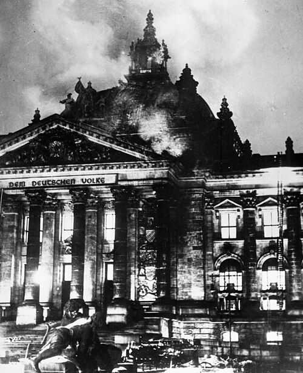
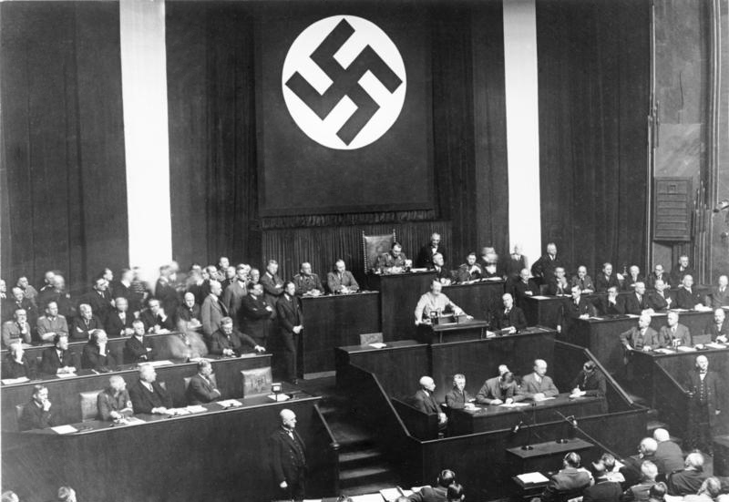
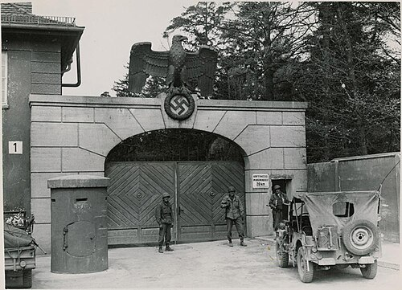
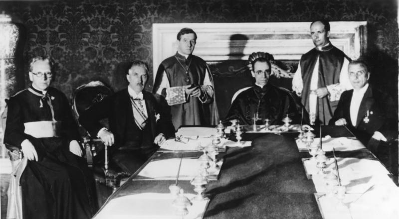
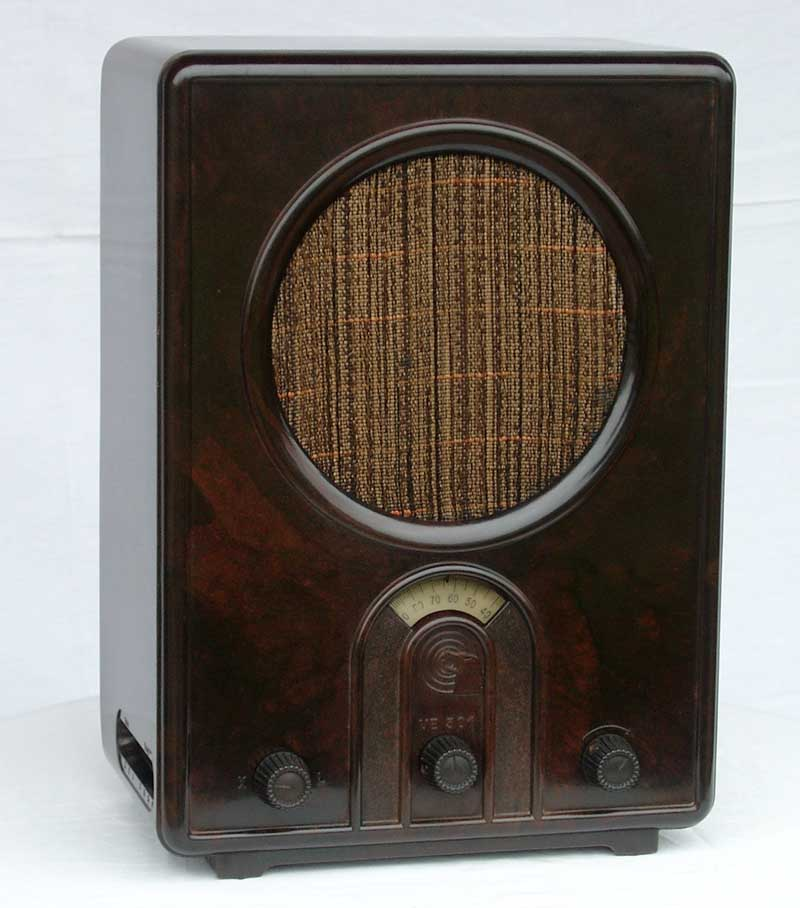
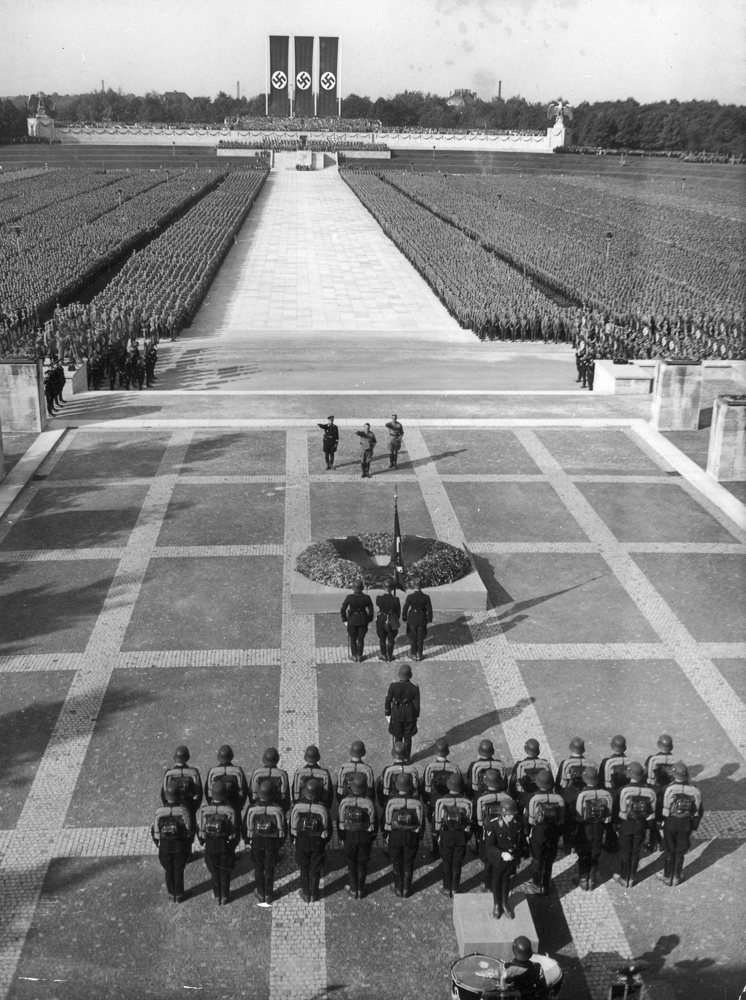
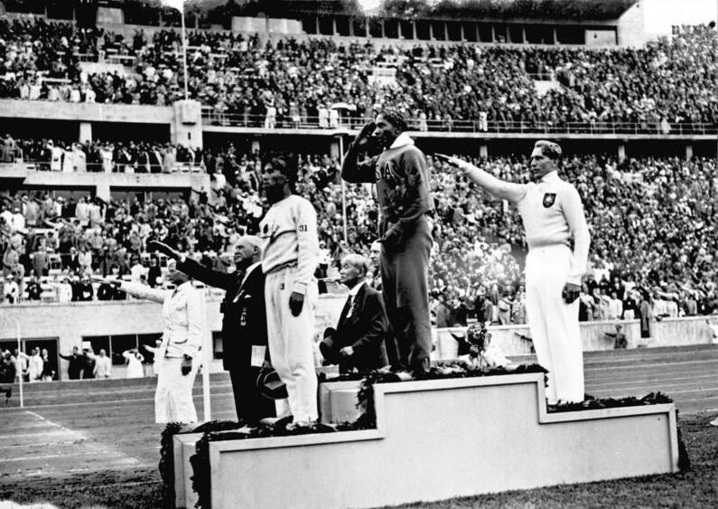
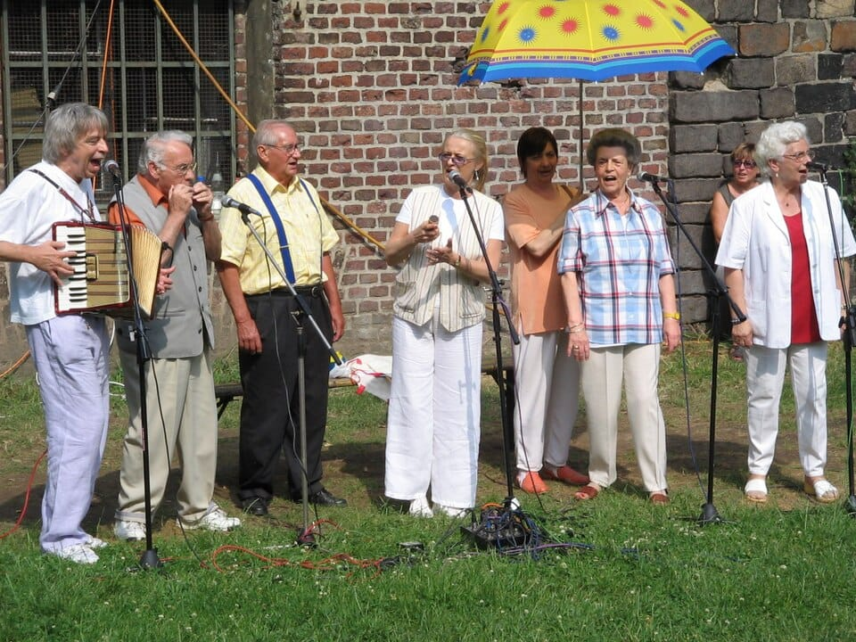
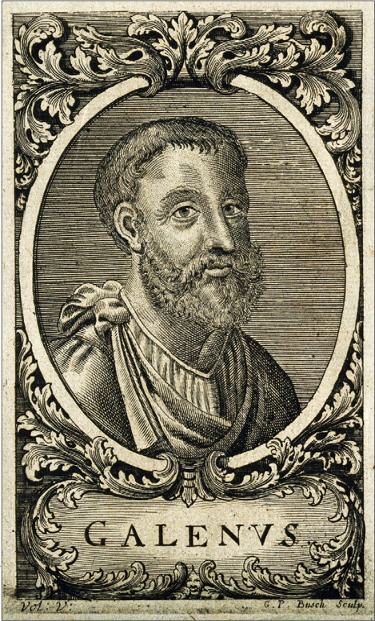

Key Topic 3: Nazi Control and Dictatorship
Paper 3: Weimar and Nazi Germany, 1918-39
Course Textbook
Enquiry: From Democracy to Dictatorship: How did Hitler destroy the Weimar Republic?
Contents
|
Lesson 1: Key Topic 3.1: The Creation of a Dictatorship, 1933–1934
|
|
|
Lesson 2: Key Topic 3.2: The Police State and Religion, 1933–1939
|
|
|
Lesson 3: Key Topic 3.3: Controlling and Influencing Attitudes, 1933–1939
|
|
|
Lesson 4: Key Topic 3.4: Opposition, Resistance and Conformity, 1933–1939
|
|
L1: Key Topic 3.1: The Creation of a Dictatorship, 1933–1934[[SRC_MARKER:L8_Start]]
Learning Objectives
Explain how the Reichstag Fire of 27 February 1933 was exploited to crush civil liberties and outlaw political opponents.
Analyse how the Enabling Act of 23 March 1933 transferred legislative and constitutional power directly to Adolf Hitler.
Assess the process of Gleichschaltung in abolishing free trade unions and establishing a legal one-party state by July 1933.
Examine why Hitler launched the bloody purge of Ernst Röhm and the SA leadership during the Night of the Long Knives in June 1934.
Evaluate how the death of President Hindenburg and the armed forces oath cemented Hitler’s supreme totalitarian authority in August 1934.
Recall & Retrieval
1. What was the original name of the Nazi Party?
2. What was the 25-Point Programme (1920)?
3. Who were the SA (Sturmabteilung)?
4. What was the Munich Putsch (1923)?
5. What was the result of the Munich Putsch for Hitler?
6. What was the Kellogg-Briand Pact?
7. When did Germany join the League of Nations?
8. What new currency ended hyperinflation?
9. What was the Dawes Plan?
10. Who led the Spartacist Uprising?
Vocabulary Check
The Odd One Out: Circle ONE term that does not belong with the others. Explain your reasoning: What historical connection links the other terms, and why is your chosen term different?
The Reichstag Fire | The Enabling Act (1933) | Gleichschaltung | Trade Unions | The Night of the Long Knives (1934) | Führer
Teacher Model / Pupil Reasoning:
[[SRC_MARKER:L8_Source_2]]
Source S1: The Gutted Shell of the Reichstag Fire (27–28 February 1933)

The smoldering ruins of the Reichstag debating chamber in Berlin following the arson attack on the night of 27 February 1933, which the Nazis blamed on a communist conspiracy.
[1.1] On 27 February 1933, six days before national elections, the Reichstag building in Berlin burned down (Source A). Police arrested Dutch communist Marinus van der Lubbe at the scene with matches.
[1.2] Hitler seized on the fire to proclaim a communist conspiracy. The next day, Hindenburg signed the Reichstag Fire Decree, suspending civil liberties, freedom of speech, and privacy, enabling the arrest of 4,000 communists.
[[SRC_MARKER:L8_Source_3]]
Source S2: The Reichstag Voting on the Enabling Act in the Kroll Opera House (23 March 1933)

The Reichstag in session at the Kroll Opera House under a giant swastika banner on 23 March 1933, as SA stormtroopers lined the aisles to intimidate delegates into passing the Enabling Act.
[2.1] (Source B) In the 5 March election, the Nazis secured 43.9% of the vote. On 23 March 1933, the Reichstag convened in the Kroll Opera House to debate the fateful Enabling Act.
[2.2] With SA stormtroopers chanting intimidation in the corridors and communist deputies jailed, the Centre Party backed the measure. Passing by 444 votes to 94, the act allowed Hitler to enact laws without parliamentary or presidential approval.
[3.1] Hitler implemented Gleichschaltung (co-ordination) to bring German society under total Nazi control. On 2 May 1933, SA squads ransacked trade union offices, arresting leaders and replacing independent unions with the state-run DAF.
[3.2] On 14 July 1933, the regime banned all other political parties, declaring the NSDAP the sole legal party. Regional state parliaments were abolished in January 1934, centralizing authority under Berlin.
[4.1] SA Chief Ernst Röhm demanded that his three-million-man paramilitary absorb the regular army, alarming conservative generals and industrial magnates who threatened to convince Hindenburg to declare martial law.
[4.2] On the Night of the Long Knives (30 June 1934), SS squads executed Röhm, senior SA leaders, and political rivals including General Schleicher and Gregor Strasser, killing over four hundred opponents.
[5.1] When the eighty-seven-year-old Hindenburg died on 2 August 1934, Hitler combined the offices of President and Chancellor, declaring himself Führer and Reich Chancellor.
[5.2] That same day, every soldier in the German armed forces swore a mandatory personal oath of unconditional obedience to Adolf Hitler himself, cementing the totalitarian dictatorship.
Pair & Share Activity
Q1. Discuss with your partner: Which event was more crucial in creating the dictatorship: the Reichstag Fire or the Enabling Act?
The 'But/Because/So' Strategy
Q2. Complete the following sentences based on the lesson narrative:
1. In January 1933, Hitler became Chancellor BUT...
2. The Enabling Act was passed in March 1933 BECAUSE...
3. The Night of the Long Knives occurred in June 1934 SO...
Vocabulary in Context
Q3. Use the following five keywords in a short paragraph (3-5 sentences) that accurately describes a key step in Hitler's consolidation of power, demonstrating your understanding of their meaning and historical context: *Reichstag Fire, Emergency Decree, Enabling Act, Gleichschaltung, One-party state*.
Causal Linkage
Q4. Explain the causal chain linking the growing power of the SA under Ernst Röhm, the concerns of the German Army, and the event known as the Night of the Long Knives. Your answer should clearly articulate how each factor contributed to the next.
Counter-Factual History
Q5. Imagine that President Paul von Hindenburg had lived for another five years beyond August 1934. How might this have altered the pace and nature of Hitler's consolidation of power and the establishment of a totalitarian dictatorship? Consider at least two specific ways Hindenburg's continued presence could have impacted events.
[[SRC_MARKER:L8_Source_0]]
Source S3: The Gutted Shell of the Reichstag Fire (27–28 February 1933)
The smoldering ruins of the Reichstag debating chamber in Berlin following the arson attack on the night of 27 February 1933, which the Nazis blamed on a communist conspiracy.
[[SRC_MARKER:L8_Source_1]]
Source S4: The Reichstag Voting on the Enabling Act in the Kroll Opera House (23 March 1933)
The Reichstag in session at the Kroll Opera House under a giant swastika banner on 23 March 1933, as SA stormtroopers lined the aisles to intimidate delegates into passing the Enabling Act.
GCSE Exam Practice
Q6. 1. Give two things you can infer from Source A about how the Nazi government used the Reichstag Fire. [4 marks]
Q7. 2. Explain why Hitler was able to establish a dictatorship in Germany in the years 1933–1934. [12 marks]
L2: Key Topic 3.2: The Police State and Religion, 1933–1939[[SRC_MARKER:L9_Start]]
Learning Objectives
Explain how Heinrich Himmler transformed the SS from an elite bodyguard into a vast state machinery of racial terror and concentration camps.
Analyse the operational reality of the Gestapo under Reinhard Heydrich versus the popular myth of omnipresent surveillance.
Assess how the traditional German legal system was Nazified through the People’s Court and ideological jurist leagues.
Examine the regime’s relationship with the Roman Catholic Church, from the 1933 Concordat to the 1937 Papal Encyclical.
Evaluate the conflict within German Protestantism between the pro-Nazi Reich Church and Martin Niemöller’s Confessional Church.
Recall & Retrieval
1. What was the Wall Street Crash (1929)?
2. How did the Wall Street Crash affect Germany?
3. How many Germans were unemployed by 1932?
4. How did the Weimar government react to the Depression?
5. Why did Nazi support surge during the Depression?
6. What was the 25-Point Programme?
7. Who were the SA?
8. What book did Hitler write in prison?
9. What was the Munich Putsch?
10. Why did the 'Golden Age' end?
Vocabulary Check
The Golden Sentence: Choose TWO terms from the word bank. Write ONE grammatically sophisticated, historically accurate sentence connecting them using a causal conjunction (because, although, or consequently):
SS (Schutzstaffel) | SD (Sicherheitsdienst) | Gestapo | Schutzhaft (Protective Custody) | The Concordat (1933) | Reich Church | Confessional Church
Teacher Model / Pupil Sentence:
[[SRC_MARKER:L9_Source_2]]
Source S1: Roll Call of Political Prisoners at Dachau Concentration Camp (1933)

Roll call of political prisoners, mostly communists and trade unionists, standing at attention in the courtyard of Dachau Concentration Camp near Munich in 1933.
[1.1] The core instrument of terror was Heinrich Himmler’s Schutzstaffel (SS). Expanded from a small bodyguard into an ideological empire of 240,000 men, the SS operated Death’s Head units guarding concentration camps.
[1.2] In March 1933, Himmler opened the first concentration camp at Dachau near Munich (Source A). Holding prisoners in "protective custody" without trial, camps subjected political opponents and trade unionists to brutal forced labor.
[2.1] Founded in 1933 by Göring and placed under Reinhard Heydrich, the Gestapo (secret state police) operated above the law, tapping telephones, intercepting post, and torturing suspects in secret cells.
[2.2] Despite its terrifying reputation, the Gestapo was small, with only 30,000 officers nationwide. It relied extensively on voluntary denunciations by ordinary citizens reporting neighbours and colleagues to settle private grudges.
[3.1] The justice system was brought under strict Nazi control. All judges were forced to join the National Socialist League for the Maintenance of Law, swearing oaths to enforce Nazi racial principles over statutory law.
[3.2] In 1934, Hitler set up the People’s Court (Volksgerichtshof) to try treason cases. Presided over by fanatical judges like Roland Freisler, the court operated without juries, handing down thousands of death sentences.
[[SRC_MARKER:L9_Source_5]]
Source S2: Signing of the Reichskonkordat at the Vatican (July 1933)

Vice-Chancellor Franz von Papen and Cardinal Eugenio Pacelli (the future Pope Pius XII) signing the Reichskonkordat between Nazi Germany and the Catholic Church in Rome on 20 July 1933.
[4.1] (Source B) In July 1933, Hitler signed a Concordat with Pope Pius XI, promising to protect Catholic schools and youth organizations if the Church stayed out of politics. The regime broke the treaty almost immediately.
[4.2] In 1937, Pope Pius XI issued the encyclical Mit brennender Sorge ("With Burning Anxiety"), condemning Nazi racial idolatry. The regime retaliated by closing Catholic youth clubs and arresting hundreds of priests.
[5.1] Protestant churches were pressured into joining the state-sponsored Reich Church under pro-Nazi bishop Ludwig Müller, which removed the Old Testament and banned pastors of Jewish descent.
[5.2] In response, Pastor Martin Niemöller and Dietrich Bonhoeffer founded the rival Confessing Church to defend traditional doctrine. Niemöller was arrested in 1937 and imprisoned in Dachau until 1945.
Pair & Share Activity
Q1. Discuss with your partner: Why was the Gestapo so terrifying despite being relatively small?
The 'But/Because/So' Strategy
Q2. Complete these sentences based on the lesson narrative: 1) Hitler signed the Concordat with the Catholic Church in 1933 BUT... 2) Hitler attempted to create a unified 'Reich Church' BECAUSE... 3) The Gestapo arrested many priests and pastors SO...
Vocabulary in Context
Q3. Write a short paragraph (5-7 sentences) explaining how the Nazi regime attempted to control and suppress religious institutions between 1933 and 1939. You must accurately use ALL of the following keywords: SS, SD, Gestapo, Schutzhaft, The Concordat (1933), Reich Church, Confessional Church.
Causal Linkage
Q4. Explain the chain of events that led to the formation of the Confessional Church and the subsequent Nazi response. Your explanation should clearly link each cause to its effect.
Counter-Factual History
Q5. Imagine the Nazi regime, from 1933, had chosen a policy of *immediate and complete suppression* of all religious institutions (Catholic and Protestant), rather than the historical path of initial conciliation (Concordat) and gradual subversion. Analyze the potential short-term and long-term consequences of this alternative policy for the Nazi regime's power, international standing, and public support within Germany, compared to the actual historical path.
[[SRC_MARKER:L9_Source_0]]
Source S3: Roll Call of Political Prisoners at Dachau Concentration Camp (1933)
Roll call of political prisoners, mostly communists and trade unionists, standing at attention in the courtyard of Dachau Concentration Camp near Munich in 1933.
[[SRC_MARKER:L9_Source_1]]
Source S4: Signing of the Reichskonkordat at the Vatican (July 1933)
Vice-Chancellor Franz von Papen and Cardinal Eugenio Pacelli (the future Pope Pius XII) signing the Reichskonkordat between Nazi Germany and the Catholic Church in Rome on 20 July 1933.
GCSE Exam Practice
Q6. 1. How useful is Source B for an enquiry into why Hitler launched the purge known as the Night of the Long Knives? [6 marks]
Q7. 2. Explain why the Nazi police state was able to maintain control in Germany between 1933 and 1939. [12 marks]
L3: Key Topic 3.3: Controlling and Influencing Attitudes, 1933–1939[[SRC_MARKER:L10_Start]]
Learning Objectives
Explain how Joseph Goebbels used the Reich Chamber of Culture and book burnings to enforce intellectual censorship in 1933.
Analyse how mass-produced radios (Volksempfänger) and daily press conferences transformed homes and workplaces into propaganda echo chambers.
Assess how choreographed mass spectacles—such as the annual Nuremberg Rallies—cultivated the Führer myth and overwhelmed individual critical thought.
Examine why the August 1936 Berlin Olympic Games was staged as a global propaganda showcase of Nazi prosperity and efficiency.
Evaluate the cultural purge of modern artistic expression, contrasting "Degenerate Art" with Aryan neoclassical realism in 1937.
Recall & Retrieval
1. Who was Paul von Hindenburg?
2. Who were the three chancellors before Hitler (1930-1932)?
3. Why did Hindenburg appoint Hitler as Chancellor in January 1933?
4. What percentage of the vote did the Nazis get in July 1932?
5. What was the Wall Street Crash?
6. How many Germans were unemployed by 1932?
7. How did Brüning try to fix the Depression?
8. Who was the first President of the Weimar Republic?
9. What was Article 48?
10. What was the Dawes Plan?
Vocabulary Check
Conceptual Classification: Categorise the terms from the word bank into the two historical boxes below:
Censorship | Propaganda | Ministry of Public Enlightenment and Propaganda | Volksempfänger (People’s Receiver) | Reich Chamber of Culture | Entartete Kunst (Degenerate Art)
Power, Governance & Warfare
Economy, Trade & Society
[1.1] In March 1933, Hitler created the Ministry of Public Enlightenment and Propaganda, appointing Dr. Joseph Goebbels. Goebbels declared his goal: to coordinate national culture until the German people surrendered completely.
[1.2] The Reich Chamber of Culture controlled seven artistic disciplines: press, radio, cinema, theatre, music, literature, and art. All artists had to join their respective chamber; Jews and critics were excluded, barring them from working.
[[SRC_MARKER:L10_Source_4]]
Source S1: The Volksempfänger VE301 "People’s Receiver" Radio (1933)

The mass-produced Volksempfänger VE301 radio, subsidized by the Propaganda Ministry and engineered with a limited receiving range to prevent Germans tuning into foreign radio broadcasts.
[2.1] (Source A) On 10 May 1933, Nazi students staged massive public book burnings in university cities across Germany. In Berlin’s Opernplatz, 20,000 books by Einstein, Marx, and Freud were destroyed on bonfires.
[2.2] The press was heavily censored under the 1933 Editorial Law: editors were legally liable for content, opposition newspapers were banned, and the official Nazi daily Völkischer Beobachter dictated the news.
[[SRC_MARKER:L10_Source_5]]
Source S2: Mass Rally at the Nuremberg Zeppelin Field (1934–1936)

Hundreds of thousands of uniformed party members, SA, and SS troops standing in geometric formations at the Nuremberg Zeppelin Field during the annual Nazi Party Rally.
[3.1] (Source B) Goebbels recognized the persuasive power of radio. The regime subsidized the cheap People’s Receiver (Volksempfänger), expanding household ownership to 70% by 1939—the highest rate in the world.
[3.2] Factory work was interrupted and street loudspeakers broadcast Hitler’s speeches. In cinema, all films required Goebbels’s approval, and cinemas were forced to show official newsreels alongside feature films.
[[SRC_MARKER:L10_Source_6]]
Source S3: Jesse Owens on the Medal Podium at the 1936 Berlin Olympics

African-American track star Jesse Owens saluting on the victory podium after winning gold at the 1936 Berlin Olympics, directly challenging Nazi racial theories of Aryan supremacy.
[4.1] Annual Nuremberg Rallies staged spectacular displays of power (Source C). Architect Albert Speer created the "Cathedral of Light" using 130 anti-aircraft searchlights, surrounding 200,000 chanting party members.
[4.2] Modernist art was condemned as "degenerate art" (Entartete Kunst). In 1937, the regime staged a Degenerate Art Exhibition in Munich, ridiculing abstract paintings, while promoting realistic neoclassical sculpture of Aryan bodies.
[5.1] The 1936 Berlin Olympics provided an international propaganda showcase. The regime constructed a 100,000-seat stadium and temporarily took down anti-Jewish street signs to project an image of an efficient, modern nation.
[5.2] However, African-American athlete Jesse Owens undermined Nazi racial theories by winning four gold medals, though Goebbels’s propaganda machine carefully framed Germany’s overall medal table victory as proof of Aryan superiority.
Pair & Share Activity
Q1. Discuss with your partner: Was Goebbels' propaganda or Himmler's terror more effective in controlling Germany?
The 'But/Because/So' Strategy
Q2. Complete these sentences based on the lesson's narrative:
1) The Nazi regime established the Ministry of Public Enlightenment and Propaganda in March 1933, BUT...
2) Joseph Goebbels was appointed head of this Ministry BECAUSE...
3) The Nazis immediately began to control all forms of media, SO...
Vocabulary in Context
Q3. Using at least three of the keywords (Censorship, Propaganda, Ministry of Public Enlightenment and Propaganda, Volksempfänger, Reich Chamber of Culture, Entartete Kunst), write a short paragraph explaining how the Nazis controlled and influenced attitudes in Germany.
Causal Linkage
Q4. Explain how the Nazi regime's control over culture and media, through institutions like the Ministry of Public Enlightenment and Propaganda and the Reich Chamber of Culture, contributed to the consolidation of their power and the stability of the regime by 1939.
Q5. The 'What If' Challenge (Counter-Factual History): What if the Nazi regime had *failed* to establish effective control over radio and film in the early years (1933-1935)? How might this have significantly altered the trajectory of Nazi Germany's consolidation of power and public support by 1939?
[[SRC_MARKER:L10_Source_0]]
Source S4: The Volksempfänger VE301 "People’s Receiver" Radio (1933)
The mass-produced Volksempfänger VE301 radio, subsidized by the Propaganda Ministry and engineered with a limited receiving range to prevent Germans tuning into foreign radio broadcasts.
[[SRC_MARKER:L10_Source_1]]
Source S5: Mass Rally at the Nuremberg Zeppelin Field (1934–1936)
Hundreds of thousands of uniformed party members, SA, and SS troops standing in geometric formations at the Nuremberg Zeppelin Field during the annual Nazi Party Rally.
[[SRC_MARKER:L10_Source_2]]
Source S6: Jesse Owens on the Medal Podium at the 1936 Berlin Olympics
African-American track star Jesse Owens saluting on the victory podium after winning gold at the 1936 Berlin Olympics, directly challenging Nazi racial theories of Aryan supremacy.
GCSE Exam Practice
Q6. 3(a) Part 1: Content & Provenance (COP) Comparative Analysis for Sources B & C. [4 marks]
Q7. 3(a). How useful are Sources B and C for an enquiry into Nazi methods of controlling and influencing attitudes in the years 1933–1939? [8 marks]
L4: Key Topic 3.4: Opposition, Resistance and Conformity, 1933–1939[[SRC_MARKER:L11_Start]]
Learning Objectives
Explain why the majority of ordinary German citizens conformed to the Nazi regime rather than actively resisting.
Analyse the methods, dangers, and limitations of underground left-wing workers’ resistance (KPD and SPD).
Assess the youth rebellion of the Edelweiss Pirates against regimentation and compulsory Hitler Youth service.
Examine how the Swing Youth used American jazz and Anglo-American fashion as cultural dissent against Nazi totalitarianism.
Evaluate the moral and public resistance of religious leaders, specifically Martin Niemöller and Bishop Clemens August Graf von Galen.
Recall & Retrieval
1. What happened to the Reichstag building in February 1933?
2. What was the Decree for the Protection of the People and State?
3. What was the Enabling Act (March 1933)?
4. What did Hitler do to trade unions in May 1933?
5. What was the Night of the Long Knives (June 1934)?
6. What title did Hitler take upon Hindenburg's death in 1934?
7. Who appointed Hitler as Chancellor?
8. Who convinced Hindenburg to appoint Hitler?
9. What was the SA?
10. What was the 25-Point Programme?
Vocabulary Check
Spot the Deliberate Error: Read the statement below. One historical fact or vocabulary concept has been deliberately falsified. Underline the error and explain the accurate historical reality below:
Conformity | Passive Resistance | Active Resistance | Sopade Reports | Edelweiss Pirates | Swing Youth
"Between 1933 and 1939, youth groups like the Edelweiss Pirates and Swing Youth showed absolute Conformity to the Nazi police state by enthusiastically marching alongside the Gestapo."
Teacher Model / Historical Correction:[1.1] Between 1933 and 1939, open active resistance was rare. Most Germans conformed to the dictatorship, motivated not only by terror, but by genuine pride in falling unemployment, modern autobahns, and foreign policy triumphs.
[1.2] However, historians identify widespread private dissatisfaction: everyday grumbling (Meckern) over meat shortages and corrupt local officials. Many adopted the "two worlds" coping strategy: giving public Nazi salutes while criticizing policy privately.
[2.1] Working-class youth formed the Edelweiss Pirates, rejecting Hitler Youth regimentation. They wore checked shirts, hiked in the countryside, and attacked Hitler Youth patrols in cities like Cologne and Essen.
[2.2] They chalked subversive slogans on walls and listened to banned American jazz music. During the war, the regime cracked down ruthlessly, publicly hanging twelve Cologne Pirates in November 1944.
[[SRC_MARKER:L11_Source_4]]
Source S1: Edelweiss Pirates Anti-Nazi Slogans and Youth Graffiti (Cologne, 1938–1939)

Gestapo photographic evidence showing anti-Nazi graffiti sprayed by the Edelweiss Pirates (Edelweißpiraten) on railway walls in the Rhineland, defying Hitler Youth control.
[3.1] (Source A) Middle-class teenagers in Hamburg and Berlin formed the Swing Youth. They grew long hair, wore British tweed jackets, gathered in secret dance clubs, and played American jazz and swing music.
[3.2] Heinrich Himmler viewed their defiance as moral treason, ordering police to send ringleaders to concentration camps for forced labor and military haircuts to eradicate decadent Anglo-American influences.
[4.1] Church opposition was voiced by courageous individuals. Catholic Bishop Clemens August Graf von Galen delivered fiery sermons protesting Gestapo terror and the secret euthanasia of disabled people.
[4.2] In the Protestant church, Martin Niemöller and Dietrich Bonhoeffer organized the Confessing Church. Although public protests slowed the euthanasia programme, religious resistance focused primarily on defending church doctrine rather than overthrowing Hitler.
[[SRC_MARKER:L11_Source_6]]
Source S2: Bishop Clemens August Graf von Galen (c. 1935)

Clemens August Graf von Galen, the Catholic Bishop of Münster, who courageously delivered famous public sermons condemning Nazi Gestapo terror and the secret T4 euthanasia programme.
[5.1] (Source B) Conservative military officers plotted to remove Hitler when his aggressive foreign policy threatened European war in 1938. Army Chief General Ludwig Beck organized the Oster Conspiracy to arrest Hitler during the Czechoslovakian crisis.
[5.2] However, when British Prime Minister Neville Chamberlain conceded the Sudetenland at Munich, Hitler secured a bloodless triumph, shattering the plotters’ momentum and solidifying Hitler’s hold over the military command.
Pair & Share Activity
Q1. Discuss with your partner: Why was there so little resistance to the Nazi regime?
The 'But/Because/So' Strategy
Q2. Complete the following sentences based on the lesson narrative:
1) Early opposition groups like the SPD and KPD were quickly suppressed BUT...
2) The Confessional Church and Catholic Church resisted the Nazis BECAUSE...
3) Most Germans conformed to Nazi rule SO...
Vocabulary in Context
Q3. Write a short paragraph (approximately 100 words) explaining the different forms of opposition to the Nazi regime between 1933-1939, using at least five of the following keywords correctly: Conformity, Passive Resistance, Active Resistance, Sopade Reports, Sabotage, Edelweiss Pirates, Swing Youth.
Causal Linkage
Q4. Explain how a combination of Nazi policies and the nature of opposition led to widespread conformity rather than successful resistance in Germany between 1933 and 1939.
Counter-Factual History
Q5. Imagine a scenario where the SPD and KPD had managed to form a unified, underground resistance movement immediately after 1933, receiving significant support from the Confessional Church and trade unions. How might this have altered the nature and effectiveness of opposition to the Nazi regime by 1939, and what challenges would such a movement still have faced?
[[SRC_MARKER:L11_Source_0]]
Source S3: Edelweiss Pirates Anti-Nazi Slogans and Youth Graffiti (Cologne, 1938–1939)
Gestapo photographic evidence showing anti-Nazi graffiti sprayed by the Edelweiss Pirates (Edelweißpiraten) on railway walls in the Rhineland, defying Hitler Youth control.
[[SRC_MARKER:L11_Source_1]]
Source S4: Bishop Clemens August Graf von Galen (c. 1935)
Clemens August Graf von Galen, the Catholic Bishop of Münster, who courageously delivered famous public sermons condemning Nazi Gestapo terror and the secret T4 euthanasia programme.
GCSE Exam Practice
Q6. 3(b). Study Interpretations 1 and 2. They give different views about religious opposition to the Nazi regime. What is the main difference between these views? [4 marks]
Q7. 3(d). How far do you agree with Interpretation 2 about religious opposition to the Nazi regime? Explain your answer, using both interpretations and your knowledge of the historical context. [16 marks]
Generated: 2026-10-19 15:36:42 UTC | Unit: weimar_nazi_germany